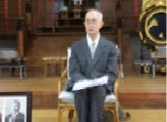
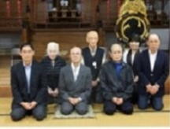
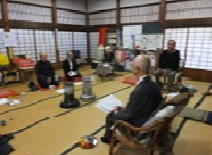
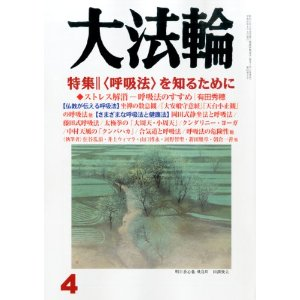

最新情報
令和8年4月30日更新 |
世田谷静坐会の代表幹事・新津光彦氏が京都静坐会の情報誌「静坐の友・季刊67号」に故折井勉様を偲ぶ投稿が掲載されました。
下段の「静坐の友・季刊67号」をクリックして2ページからご覧下さい。
「静坐の友・季刊67号」←ここをクリック
※本文はPDFファイル形式になっています。ご覧になるにはAdobeReaderが必要です。インストールはこちら →
令和４年9月3日更新 |
令和４年７月２７日更新 |
平成25年度世田谷静坐会に於ける加島直吉先生の講話・「六十年の静坐」ご紹介
平成25年10月27日、世田谷静坐会に於いて加島直吉先生がご自身の静坐体験を語られた「六十年の静坐」の講話をご紹介致します。本文は下段の「六十年年の静坐」をクリックするとご覧頂けます。



「六十年の静坐」講演の概要
六十年の静坐
１．静坐とのご縁
・ 禅道場入門と沢木興道先生との出会い
・ 橋本五作先生の「静坐の力」との出会い
２．世田谷静坐会へ入会
３．あきらめずに継続した理由
・ 少年時代の体験
・ 「静坐の力の影響」
・ 小林信子先生との出会い
・ 岡田先生のお言葉
・ 静坐による効果の実感
４．京都静坐会への参加
５．最近の静坐
・ 姿勢と静坐
・ ボイストレーナーとの出会い
・ 柳田先生のお言葉
ここをクリックすると本文が表示されます→ 六十年の静坐
※本文はPDFファイル形式になっています。ご覧になるにはAdobeReaderが必要です。インストールはこちら →
平成26年3月29日更新 |
◎大法輪4月号 特集〈呼吸法〉を知るために
第二部 さまざまな呼吸法と健康法
◇掲載記事の主な内容
岡田式静坐法と呼吸法 － 折井勉 世田谷静坐会
◆ 岡田虎二郎と静坐会
◆ 岡田式静坐法のめざすもの
◆ 静坐十則 静坐法と呼吸法
◆ 効果
